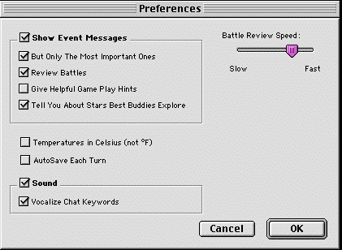

The first time you run Spaceward Ho!, a preferences file called "Spaceward Ho! 5.0 Prefs" will be created in the Preferences folder in the System Folder of your startup disk.
We store everything in the prefs file: where you like the windows placed, whether you want sound on or off, your preferred battle speed, and so on.
In addition, the preferences file holds the names of people you've played the game with, the names of the ships you design, and the stars you name for winning the game.
To start fresh (like if you once named a ship after your new ex-girlfriend, and the sight of her name brings painful memories), just throw away the preferences file. All this information (including your non-network master points!) will be erased.
Most of the Preferences are set by the "Preferences... ".

If this item is checked, event messages will be displayed in the lower left hand corner of the map at the beginning of each turn. Click on the message or press return to go to the next one. All messages appear in the Report Window whether or not this item is checked.
This eliminates a lot of the "chit-chat" messages, like when ships refuel and when you're spending money terraforming unprofitable stars. It leaves battle messages and tech advance messages, as well as supernovas and the like.
This item only matters if the one above it, "Show Event Messages," is also checked. If both of them are, then every time a battle event message is about to be displayed, the battle will automatically be reviewed. If it is not checked, only the summary message will be shown.
You can control the speed of shots and explosions in the battle reviews by setting the battle speed here. If you get bored watching battles, speed them up. Having "Piles Shoot Together" will speed up battles considerably, especially with giant battles. Deselecting "Fully Animated Battles" will skip the explosion graphics, making battles go even faster.
If this is checked, Spaceward Ho! will save the game to its saved game file every turn, so if the power goes off unexpectedly you can start right where you left off.
This makes Spaceward Ho! play sounds when certain chat words appear in the chat window. Examples include LOL, hehe, and the favorite #$&@!